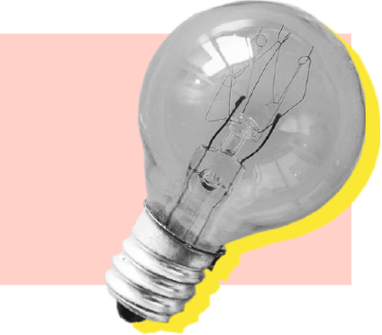
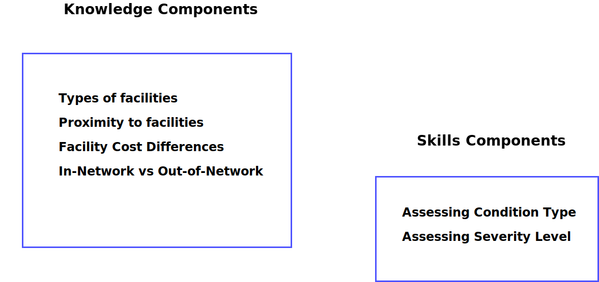
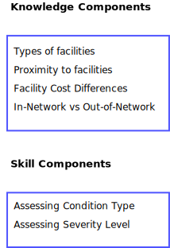
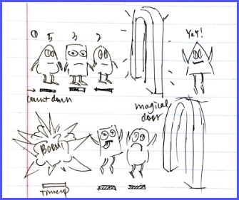
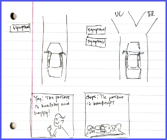
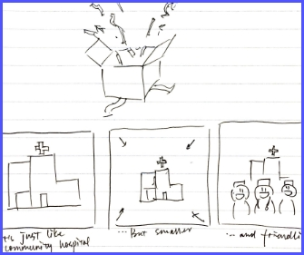

HealthTech
Research
Goals
Learn about the American healthcare system
Understand how individuals engage with their healthcare
Analyze a person’s decision making process at the time of an urgent medical situation
Determine opportunities to intervene and successfully direct someone to an appropriate place for care
Research
Methods
We used a vast number of research methods to explore the problem space. These explorations provided us with insights on behaviors, decision-making, and emotional states regarding urgent medical situations, and helped lay the foundation for our design.
1
Qualitative Interviews
45+ in-depth interviews with emergency room and urgent care visitors, emergency department nurses, administrators, and physicians
2
Field Observations
Direct observations of emergency departments, urgent cares, health and wellness centers, and doctor’s offices
3
Competitive Analysis
Evaluate current wayfinding technologies, patient engagement apps, and other healthcare software for consumers
4
Secondary Research
Review of research journals, medical advertising, patient engagement technologies, and existing data provided by our client
5
Feature Analysis
Conduct analyses of our client’s current applications to evaluate features and find limitations
6
Co-Design Workshops
Facilitate 2 co-design workshops to understand the decision making process at the time of a medical incident
7
Affinity Diagramming
Aggregate and synthesize over 1,000 interview notes to identify issues and reveal valuable insights
8
Concept Mapping
Build concept maps to represent relationships and organize our knowledge of the healthcare space
9
Patient Journey Map
Map out a patient journey flow to identify key interactions, motivations, and breakdowns
10
Personas
Design personas to create an understanding of our core users
Early Research
Findings
01
People don’t know all the options for getting medical care.

02
People go to the emergency room incorrectly when the situation is beyond their understanding.

03
Immediately after care, people are not in the mindset to receive new information.

04
People choose a care facility based on proximity, cost, familiarity, affiliation, and perceived quality of care.

05
People wait until it is too painful to bear.

Key Insights

Preconceived Notions
People’s preconceived notions about care, direct them on where to go when they need medical attention.

In-the-Moment Persuasion
It’s almost impossible to change a person’s decision after they’ve chosen a course of action during a medical emergency.
Lack of Knowledge
There is a general lack of knowledge around key healthcare knowledge and skill concepts which lead to poor decision making.
Knowledge and Skill Components
Our research revealed several knowledge and skill components which we found were key to choosing the best fit location to treat a medical incident. Eventually, our solution would need to impart this knowledge on our users.


Early Prototype
Concepts
We generated over 50 original ideas designed to entice users to engage with our educational content about the knowledge and skill components. Utilizing the key insights, our generated knowledge and skill components, and our research on interactive advertising we then converted these ideas into several paper prototypes.

IDEA#1 Waiting in Line
Characters are waiting in line to go through the magical door to be healed. Each character has a countdown which indicates the level of severity. The player has to rank the characters so everyone is seen before exploding.

IDEA#2 Driving Game
In a driving stimulation game, the player is presented with progessive symptoms and must decide where the character should go everytime a new symptom pops up.

IDEA#3 The Gift
The app presents a gift box on the interface, using the user’s geolocation, and suggesting the user open it. If the user clicks on the box, a short animation of pops up, informing them about the new micro-hospital within their community.